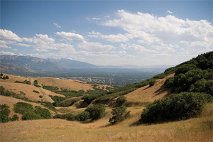

博纳维尔海岸线 犹他州,美国  博纳尔海岸步道 博纳维尔海岸沿着犹他北部古湖博纳维尔海岸线。它是一个混合使用（骑自行车/远足/骑马）休闲小径。它将总305 +英里的污垢和铺设的小径，当完成，但一些部分的线索还没有发展。博纳维尔海岸步道是一个中等水平的上涨与许多滴爬近峡谷口。这是一个远足最适合早春或晚落，因为它通常仍然是温暖的，可用时，更高的海拔小径覆盖在雪。 回顾 爱它 这是超级可怕的旅行。它真的offers of the谷大视图和组合好，太阳和阴影。不要忘记把你的房间！